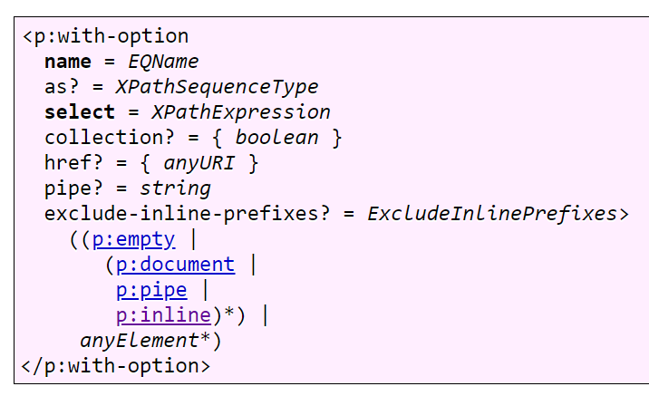
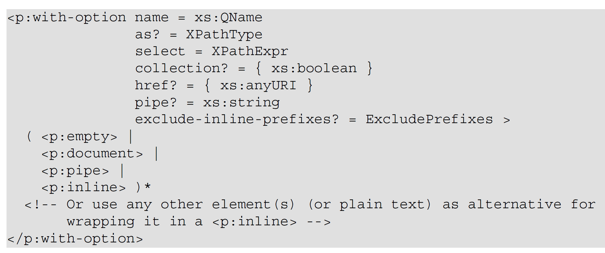
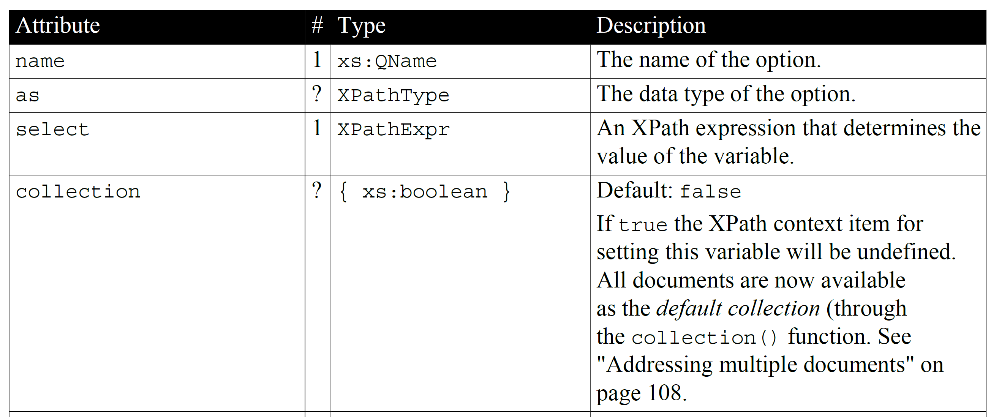
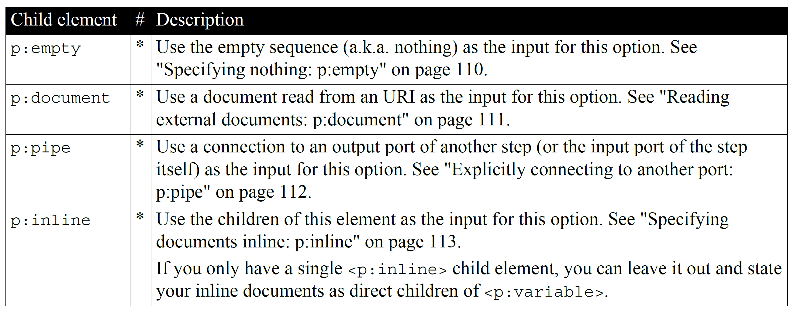

What is a good (or at least sufficient) documentation format for our XML structures? We've already talked about the importance of introductory text and examples so let's not talk about that again. Let's look at how to document the basic building blocks of XML: elements. I'll list some requirements first an then talk about what I made of them.
The structure must be clear in a single glance, with as little ambiguity as possible.
It must contain all the necessary detailed information, quick and easy to find.
It must be attractive to look at. Of course attractiveness is subjective but probably everybody knows examples of pages with a really bad layout. Avoid this.
It must have ample space (and locations) for additional narrative texts.
It should not deviate too much from what the reader is expecting and used to.
It must be consistent: all elements must be done the same way (so the reader gets used to the format).
When I started out writing the XProc book I thought long and hard about how to do this. What I came up with is the following:
For the "clear in a single glance" experience you have to start with some kind of formalized depiction of the XML element. A common way is the following (this comes from the XProc 3.0 standard):
Figure 10. Example of an XML element documentation diagram
|  |
If you look at other documentation formats, you'll see this in several variations. Admittedly, its hard to beat. It make the element's structure clear in a single glance and people are used to it. So I decided to stick with it, more or less. One important thing I changed is to put angle brackets around child elements to make it very and unambiguously clear that these are elements.
Figure 11. My XML element documentation diagram
|  |
Regardless of the layout details, starting with something like the above is important. People are used to it and get an immediate and clear impression what we're talking about.
After this diagram come the details. What do the attributes and child elements mean? How can we make this as clear and easy to find as possible?
In my view, nothing beats tables in presenting this kind of information. These tables should be consistent in that
all attributes and child elements must be there. Yes, even when you're documenting this name attribute
for the umpteenth time, it must be there. The reader might not have seen the explanations that came before and
expect it to be there (but nothing of course that stops you from pulling repeated texts from some common source in
your tool-chain…).
Here is an excerpt of the table explaining the attributes of the example <p:with-option> element:
Figure 12. Example of a table explaining attributes
|  |
And here is the table explaining the child elements:
Figure 13. Example of a table explaining child elements
|  |
As you can see, the texts in the tables are relatively short. When longer or additional explanations are necessary, put them elsewhere and link to them (or say something like "see below").
I will not show you, but my tool-chain allows me to add additional narrative texts (almost) everywhere: in-between the diagram and the tables, in-between the tables, etc. So whenever and where-ever necessary, additional explanations can be added, exactly where they're needed to have maximum impact on the understandability.
So is this it? No, absolutely not. I regularly catch myself changing this or that little detail (especially when the inspiration for writing prose is temporarily missing, the equivalent of doodling around…). There are still some things I'm not totally satisfied with but unsure on how to proceed or decide. For instance the order of attributes/child elements. Should this be alphabetical or in order of importance? And if the latter, how do you decide on importance? It's probably something that is never finished but one thing I do know: it's slowly getting better.